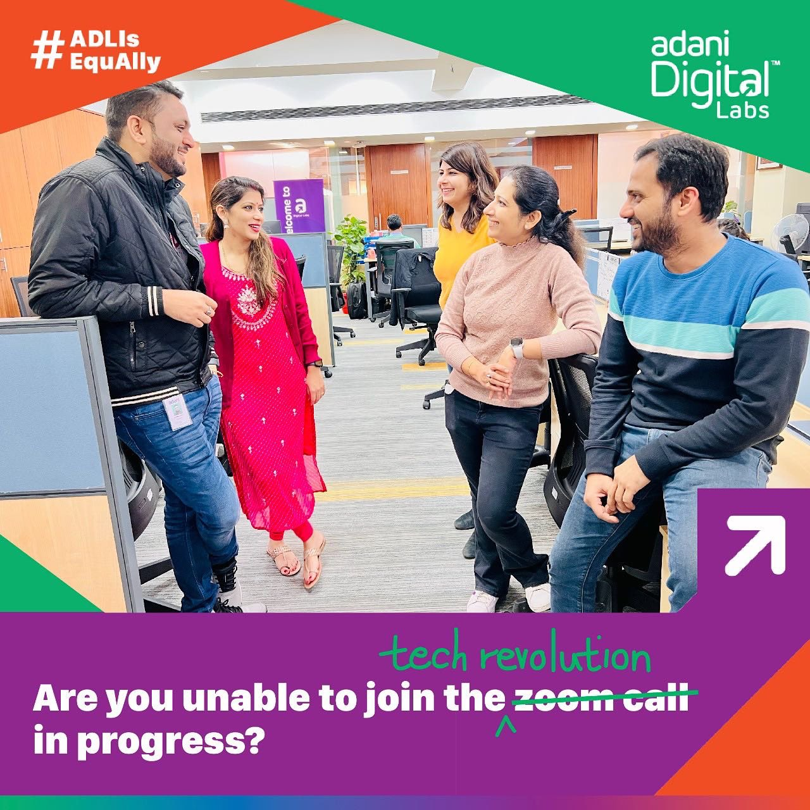

Concept to creation, entirely in-house.
This was a full-ownership brief. From the initial insight through to the photoshoot, casting, copy, narrative framework and channel distribution, every element of the campaign was conceived and executed in-house.
Women were not choosing where to work. They were choosing where they felt safe.
The campaign began with a simple but uncomfortable observation: job interviews in India routinely include questions that have nothing to do with a candidate's ability. Questions about marriage plans, parenthood, health, family commitments. Questions that are asked of women, not of men.
These questions do not just create awkward interview moments. They shape where women choose to apply in the first place. If a candidate expects to be asked whether her marriage plans will affect her commitment, she filters herself out before she filters the job out.
"Women were not deciding where they wanted to work. They were deciding where they would feel safe to work."
The conventional employer branding response would be to list policies: maternity leave, flexible hours, diversity targets. But policies are claims. The campaign needed to demonstrate understanding, not assert commitment.
The ADL is EquAlly film.
A video showcase capturing the lived experiences, culture, and equal workplace environments across Adani Digital Labs.
Take the question they dread. Flip the answer.
Rather than talking about ADL's inclusion values, the campaign surfaced the exact questions that create psychological barriers to application, and answered them differently. Each creative took a real, recognisable interview bias and reframed it as an act of acceptance.
The format was deliberate: question on top, answer below. The question creates recognition—every woman reading it has been asked it, or has dreaded being asked it. The answer removes the fear. The combination communicates culture more precisely than any policy document can.
Real employees. Real workplaces.
The decision to cast actual ADL employees rather than models was strategic, not just aesthetic. Stock photography signals aspiration. Real employees signal reality. The campaign's central claim was that this is a lived culture, not a stated value. The creative had to prove that from the first frame.





Three choices that made the campaign work.
Numbers that changed an organisation.
"Most diversity campaigns measure reach and engagement. This one measured representation. The shift from 8% to 31% women in the workforce is an organisational outcome driven by communications."